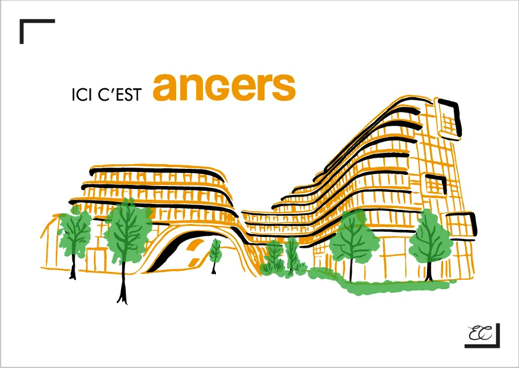

<!DOCTYPE html>
<html lang="fr">
<head>
  <meta charset="UTF-8">
  <meta name="viewport" content="width=device-width, initial-scale=1.0">
  <title>Métamorphoese — Elsa Chazallet</title>
  <meta name="description" content="Jeu de création, via une chaîne de transmission.">

  <link rel="icon" href="/icon.png" type="image/png">
  <link rel="apple-touch-icon" href="/icon.png">

  <link rel="preconnect" href="https://fonts.googleapis.com">
  <link rel="preconnect" href="https://fonts.gstatic.com" crossorigin>
  <link href="https://fonts.googleapis.com/css2?family=Jost:wght@300;400;500;700&display=swap" rel="stylesheet">

  <!-- ../ = on remonte d'un dossier : la page est dans un sous-dossier -->
  <link rel="stylesheet" href="../style.css">
</head>
<body>

  <!--
    MODE D'EMPLOI (à supprimer quand ta page est finie)

    Une page projet = le titre + des RANGÉES empilées dans l'ordre de ton choix.
    Chaque rangée est un bloc <section class="rang rang--NOM"> ... </section>.
    Copie, colle, déplace ou supprime des rangées librement.

    Noms disponibles :
      rang--image-texte  grande image à gauche, texte à droite
      rang--texte-image  texte à gauche, grande image à droite
      rang--texte-deux   texte à gauche, 2 images hautes à droite
      rang--deux-texte   2 images hautes à gauche, texte à droite
      rang--pleine       1 image pleine largeur
      rang--deux         2 images côte à côte
      rang--trois        3 images côte à côte
      rang--texte        texte seul
      rang--video        vidéo YouTube ou Vimeo
      rang--audio        lecteur SoundCloud ou Bandcamp

    Pour mettre une image : dans la ligne img, retire le symbole de début et le
    symbole de fin de commentaire, et indique ton fichier.
    Proportions d'UNE image : class="fig ratio-portrait" (ou ratio-paysage,
    ratio-carre, ratio-large, ratio-panorama, ratio-libre = sans rognage).
  -->

  <div class="page">

    <!-- EN-TÊTE : cliquable, ramène à l'accueil -->
    <a class="header-image" href="../index.html" aria-label="Retour à l'accueil">
      
    </a>

    <main class="fiche">

      <a class="retour" href="../index.html">&lt;&lt; Retour</a>
      <h1 class="fiche-titre">Métamorphose</h1>
      <p class="fiche-annee">Projet pour l'inauguration de l'immeuble "Métamorphose" à Angers<br>
        2025 </p>

      <!-- RANGÉE 1 : grande image à gauche, texte à droite -->
      <section class="rang rang--image-texte">
        <figure class="fig ratio-libre">
          
        </figure>
        <div class="rang-texte">
          <p>Rally Tampon réalisé à l'occasion de l'inauguration de l'immeuble Métamorphose à 
angers. Une résidence imaginée par les associés <a href="https://hamonic-masson.com/projet/metamorphose-site-quai-saint-serge/"> hamonic et masson</a>
J'ai été sollicitée par Angers Loire Métropole pour réaliser ces estampes à l'image de cet architecture flambant neuve, afin de faire participer les invités à une actvité ludique et manuelle.</p>
          </p>
         </div>
      </section>

    <section class="rang rang--trois">
  <figure class="fig ratio-libre">
    
  </figure>
      <figure class="fig ratio-libre">
    
  </figure>
        <figure class="fig ratio-libre">
    
  </figure>
    </section>
      
      <section class="rang rang--pleine">
        <figure class="fig">
    
  </figure>
         
     </section>
    </main>

  </div>

</body>
</html>
